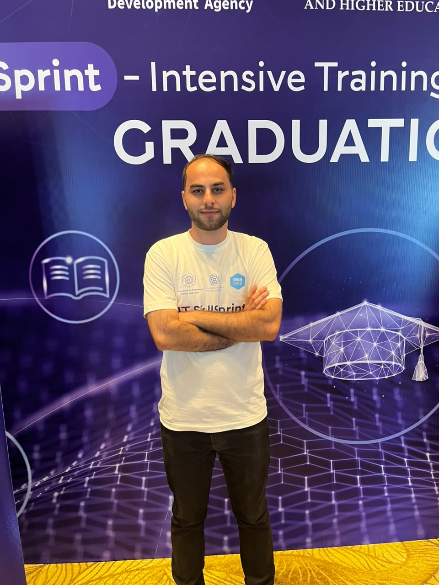

Kanan Salmanli
I build
AI/ML Engineer and fourth-year IT student (SABAH honours). I ship production-grade LLM, RAG and computer-vision systems — aligned with Azerbaijan's sovereign AI development.

01 / About
Practical, enterprise-ready AI
Fourth-year Information Technology student (SABAH honours programme) with hands-on experience in LLM integration, RAG systems, computer vision, and AI application development.
I integrate AI models into REST APIs, deploy via Docker, and deliver internal-use interfaces with Streamlit. Currently completing the Ironhack DevOps programme to take models from notebook to production.
02 / Experience
Where I've worked & learned
AI/ML Engineer Intern
C4IR Azerbaijan · Centre for the Fourth Industrial Revolution
- Developed ML and deep-learning models for applied civic and industrial use-cases.
- Designed real-time NLP pipelines (RAG, embeddings, ElasticSearch vector indexing) for high-frequency data streams.
- Built a face recognition application for a real-world authentication use case.
DevOps
Ironhack
- CI/CD, Linux & networking, Docker, Terraform, Ansible, Prometheus / PromQL / Grafana / cAdvisor.
B.Sc. Information Technology (SABAH Honours)
Azerbaijan Technical University
Data Science
Turing Academy · Gi Academy
03 / Skills
Toolbox
AI/ML Core
Computer Vision
NLP & Speech
API & Integration
Data
DevOps & UI
04 / Projects
Selected work
Certificates
- DevOps — Ironhack
- Data Science — Gi Academy
- Microsoft Excel Expert
Soft skills & languages
- Attention to detail · Goal-oriented · Team collaboration
- Clear communication of technical concepts
- Responsibility, punctuality, fast execution
- English
05 / Contact